Mileaf / Directions v2 / 2026.11
同一组车主数据，三种阅读顺序。
固定合成数据，360 × 800 逻辑视口，Chrome headless 实际渲染。三套方向不是换色稿：A 用深色车况主屏建立锚点，B 用仪表刻度与等宽数字建立精度，C 用衬线、纸感与账簿建立品牌。所有图仅用于方向评审，未修改 Flutter 页面。
深色 主基线浅色 白天等价主题固定样例 2026-10-26 18:40 · 68% / 320 km
A · 夜航
一块夜里的仪表玻璃，其余退成纸面。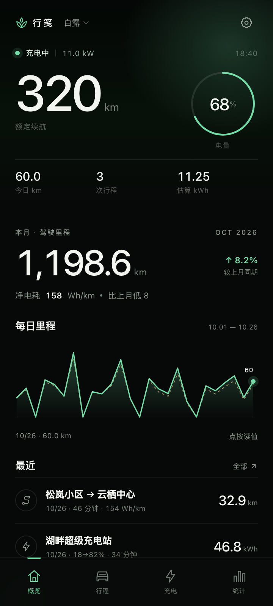
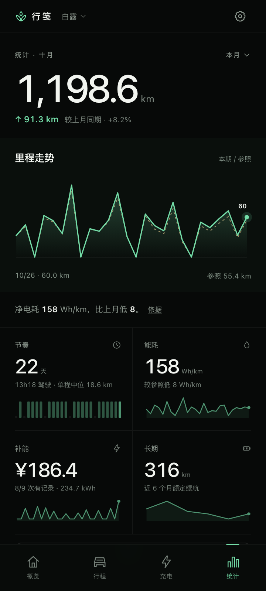
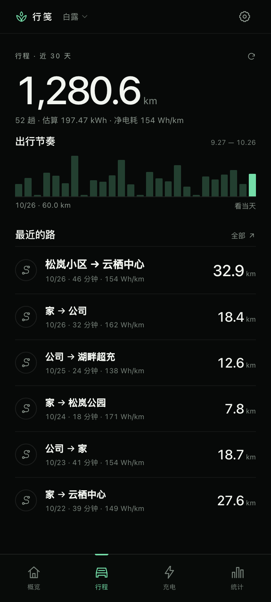
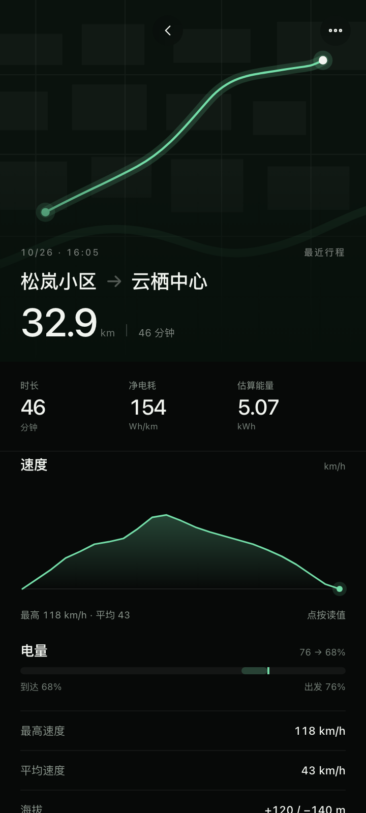
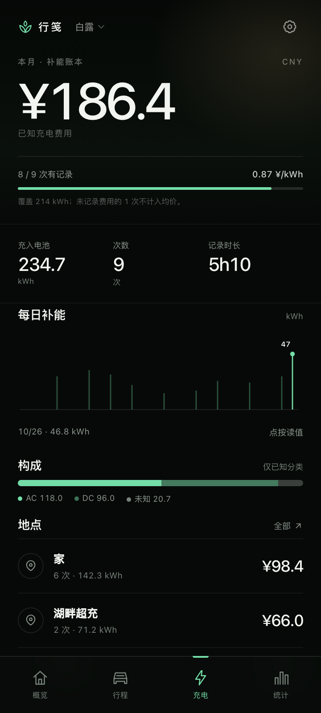
B · 仪表
像读一块精密仪表，每个数字都有刻度。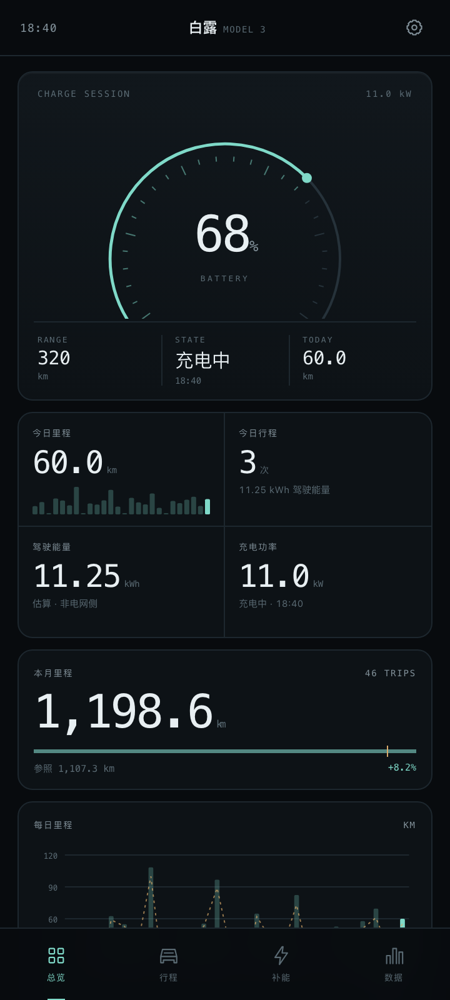
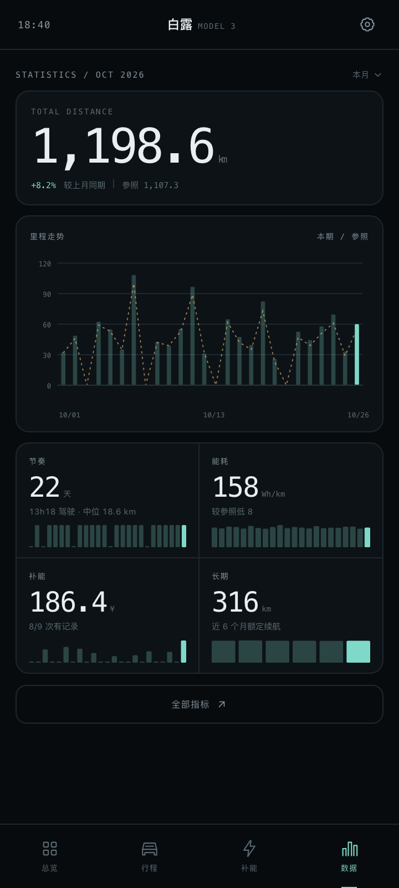
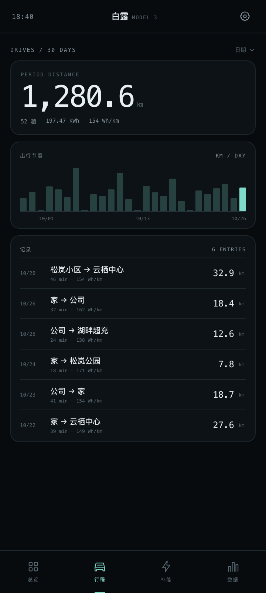
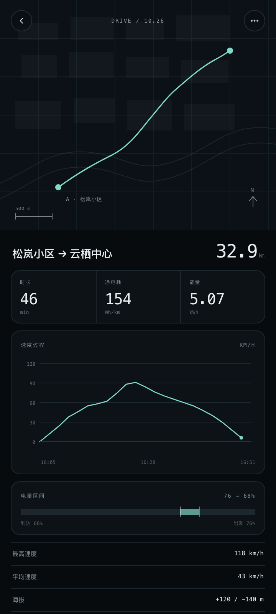
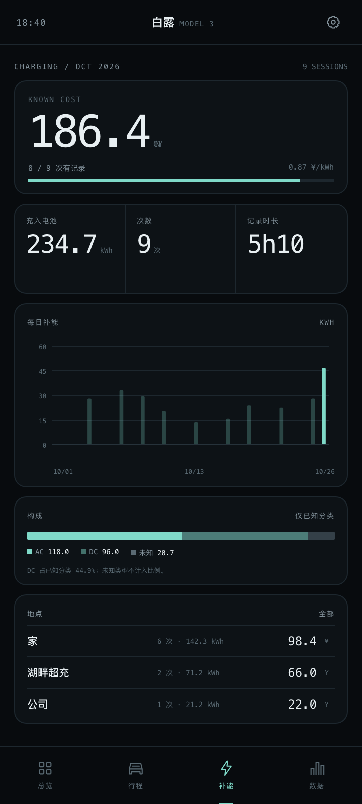
C · 夜读
把一个月写成一段夜读：大字、留白、纸感。
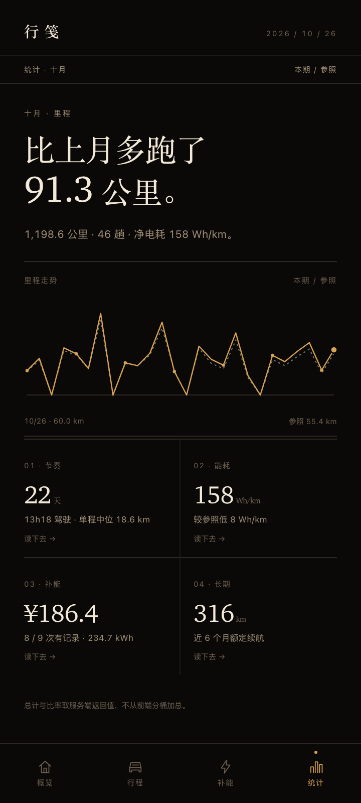
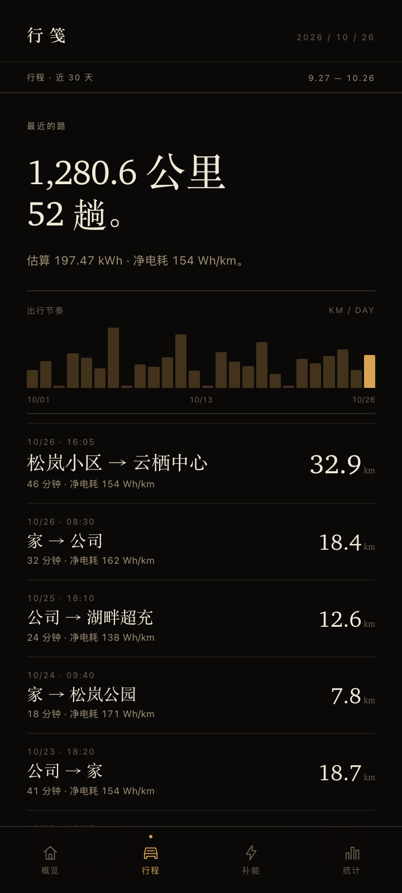
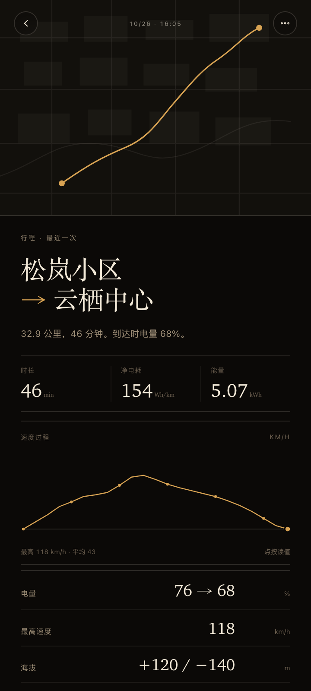
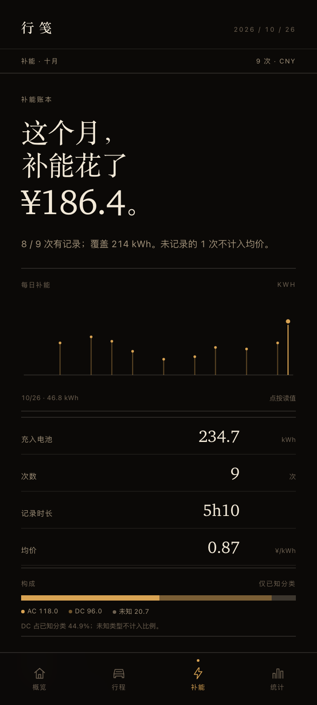
浅色对照
只抽概览与统计；完整浅色矩阵在方向确认后进入 Spec。
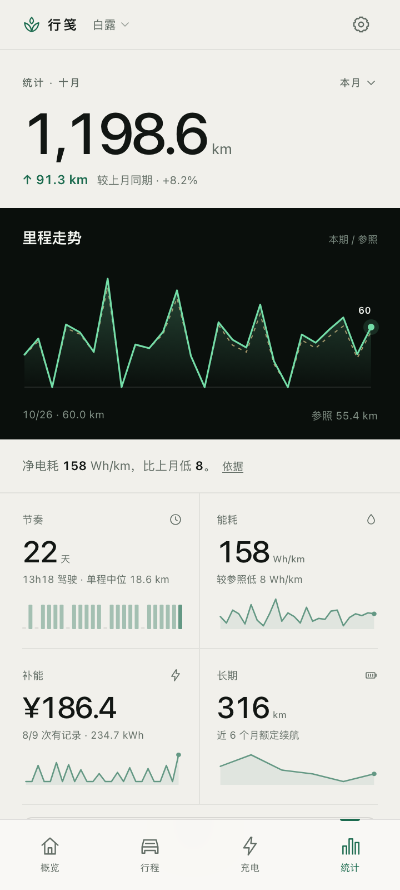
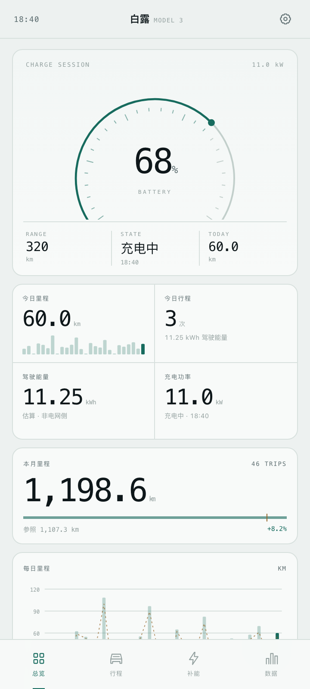
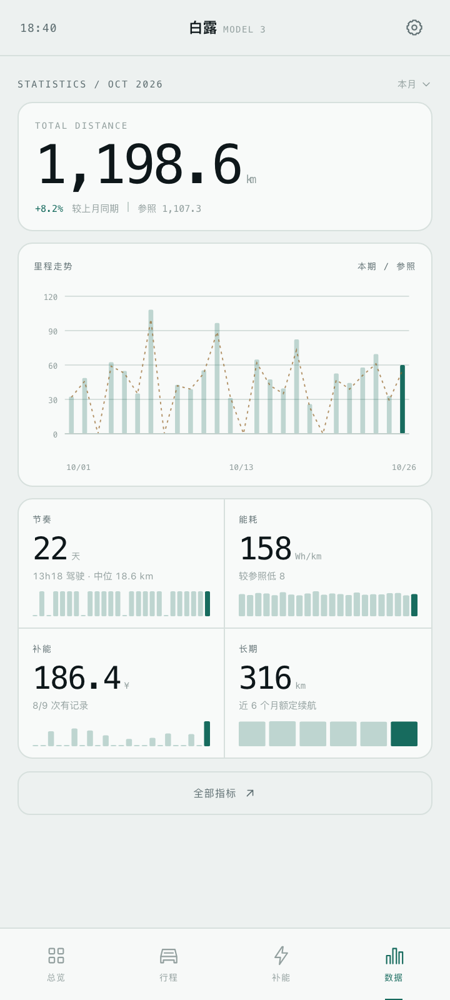
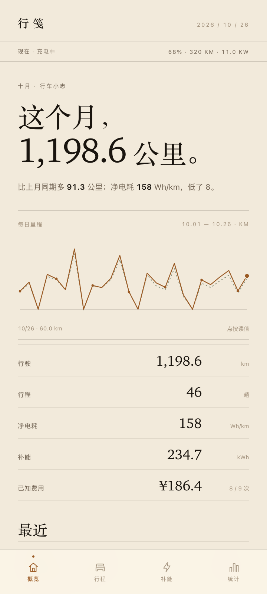
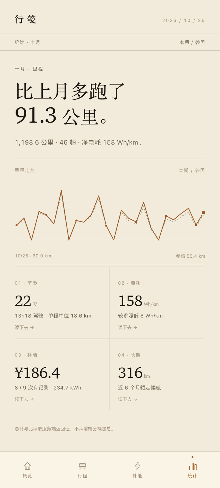
评审边界：固定合成数据；无 API、无持久化、无外部字体/图片/地图瓦片。截图是浏览器级方向验证，不是正式 Flutter 渲染、真机、真实站点、地图许可/坐标或性能验收。交互评审入口：../index.html；并排图：compare-dark.png。